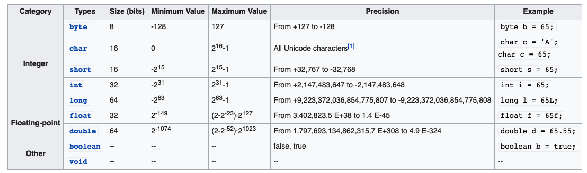
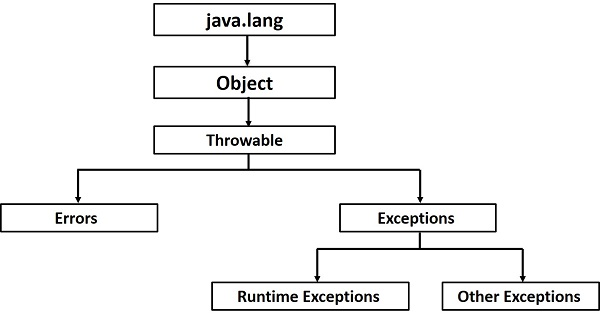
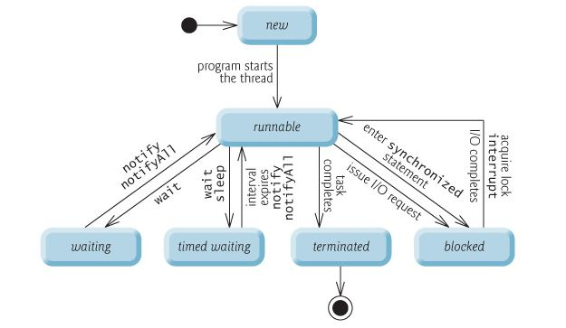
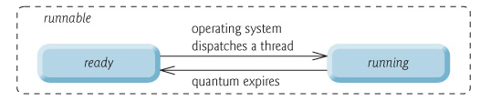

Java 基础
基本类型

浮点数
float是单精度浮点数，内存分配 4 个字节，占 32 位，有效小数位 6 - 7 位double是双精度浮点数，内存分配 8 个字节，占 64 位，有效小数位 15 位- 默认声明的小数是 double 类型的， 如
double d=4.0如果声明：float x = 4.0则会报错， 需要如下写法：float x = 4.0f或者float x = (float)4.0其中4.0f后面的f只是为了区别double，并不代表任何数字上的意义
Java 中的数组
1 | String[] strs = new String[3]; |
hashCode / compareTo / equals
hashCode : for operation in HashMap / HashTable / HashSet
1 |
|
compareTo :
为了顺序，实现 java.lang.Comparable<T> 接口
1 |
|
equals 主要用于 Collections API
1 |
|
Exception
继承关系

Checked Exception / Unchecked Exception
1
2
3
4
5
6
7
8
9---> Throwable <---
| (checked) |
| |
| |
---> Exception Error
| (checked) (unchecked)
|
RuntimeException
(unchecked)Checked Exceptions（如：IOException）must check
Unchecked Exceptions
Errors：如
StackOverflowErrorandOutOfMemoryError子类 can throw 比父类更少 checked exceptions，不能更多
try-with-resources
Java 7 后，我们可以使用简单的语法来使用 extend AutoCloseable 的资源，资源将会自动的 close
1
2
3
4
5
6try (Scanner contents = new Scanner(new File(playerFile))) {
return Integer.parseInt(contents.nextLine());
} catch (FileNotFoundException e ) {
logger.warn("File not found, resetting score.");
return 0;
}
Overide vs Overload + @Overide 注解
类的加载顺序
https://blog.csdn.net/weixin_37766296/article/details/80545283
Java 线程
线程的生命周期


Daemon thread vs User thread
A daemon thread is a thread that does not prevent the JVM from exiting when the program finishes but the thread is still running. An example for a daemon thread is the garbage collection.`
主线程结束后，如果只有 Daemon threads，Daemon threads 自动退出，程序结束。
优先级：User thread > Daemon Thread
You can use the setDaemon(boolean) method to change the
Thread daemon properties before the thread starts.
Thread.sleep(ms) vs
Threa.yield()
sleep()Causes the thread to definitely stop executing for a given amount of time; if no other thread or process needs to be run, the CPU will be idle (and probably enter a power saving mode).
yield()Basically means that the thread is not doing anything particularly important and if any other threads or processes need to be run, they should. Otherwise, the current thread will continue to run.
java.util.concurrent.Executors
提供一个直接处理任务的层，帮你管理 Thread 对象
Comand 设计模式
Java 8 Lambda
Lambda 对应的接口类型
Java 7 已经存在的
- java.lang.Runnable : () -> {}
- java.util.concurrent.Callable: () -> { return V } , can throw exception
- java.security.PrivilegedAction
- java.util.Comparator: (T t1, T t2) -> { return int }
- java.io.FileFilter
- java.beans.PropertyChangeListener
Java 8 新增的
java.util.functionPredicate<T>——接收 T 对象并返回 booleanConsumer<T>——接收 T 对象，不返回值Function<T, R>——接收 T 对象，返回 R 对象Supplier<T>——提供 T 对象（例如工厂），不接收值UnaryOperator<T>——接收 T 对象，返回 T 对象BinaryOperator<T>——接收两个 T 对象，返回 T 对象
常用 JVM 参数
GC 相关
-XX:+PrintGCDetails- ``
堆分配相关
-Xmx –Xms：指定 Java 堆最大值（默认值是物理内存的 1/4）和初始 Java 堆最小值（默认值是物理内存的 1/64）默认（MinHeapFreeRatio 参数可以调整）空余堆内存小于 40% 时，JVM 就会增大堆直到
-Xmx的最大限制， 默认（MaxHeapFreeRatio 参数可以调整）空余堆内存大于 70% 时，JVM 会减少堆直到-Xms的最小限制。 开发过程中，通常会将-Xms与-Xmx两个参数的配置相同的值，其目的是为了能够在 Java 垃圾回收机制清理完堆区后 不需要重新分隔计算堆区的大小而浪费资源。注意：此处设置的是 Java 堆大小，也就是新生代大小 + 年老代大小
栈的分配相关
-Xss
基本数据结构
Stack Deque, Vector Queue, List, Set Collection
Map: HashMap, HashTable List: ArrayList, LinkedList
Generic 泛型
为什么需要泛型
使用泛型的代码对比没使用泛型的代码有如下优势：
- 编译器的强类型检查
- 消除类型强制转换
- 允许定义自定义类型、类型安全、易读的泛型算法
泛型类型
一个泛型的类可以通过如下形式定义：
class name<T1, T2, ..., Tn> { /* ... */ }
T1, T2, ..., Tn 表示类型的参数
1 | /** |
类型变量 T 可以是任何非原始数据类型的类，包括：任何类类型，接口类型，任何数组类型，甚至是另外一个类型变量。
可以用同样的方法来创建 泛型接口。
变更日志
2020.01.01创建文章